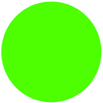
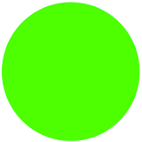

Hello, I'm
Now Available 


Hello, I'm
Now Available 
Get To Know More

3+ years
Full Stack Development

Masters Degree in Computer Sacience
University of Florida
Bachelors Degree in Computer Engineering
Sastra University
I'm Avinash Pittu, a University of Florida M.S. in Computer Science graduate with a passion for leveraging technology to drive impactful solutions. With a strong foundation in Python, Java, React, and cloud technologies, I bring over three years of experience in Full Stack Development, specializing in ETL processes, web application development, and machine learning. My journey in software development has been driven by a relentless pursuit of innovation and excellence. I thrive in dynamic environments where I can apply my skills to drive efficiency and innovation. I am adept at collaborating with cross-functional teams to deliver high-quality solutions that meet and exceed expectations. I am currently seeking new opportunities to further expand my skills and contribute to meaningful projects. I am excited about the prospect of joining a team that shares my passion for technology and impact-driven solutions. Let's connect and explore how we can work together to make a difference through software development.
Explore My Experience as
Software Engineer under Prof. Dr. Loic Deleyrolle
Software Developer in Tekplanit
Software Engineer in Tata Consultancy Services
Software Developer Associate in Tata Consultancy Services
Browse My Recent

Developed a Stack Overflow clone using the MERN stack, showcasing skills in Full Stack Development and familiarity with MongoDB, Express.js,
React.js, and Node.js
Developed a Project uses facial features and head movement to recognize "Yes" or "No" gestures and records responses to a question, logging them with timestamps demonstrating proficiency in Python, OpenCV, NumPy, and the project also includes containerization using Docker for easy deployment..
This project implements a voice assistant that uses speech recognition to ask questions and record user responses, logging them with timestamps. The project also includes containerization using Docker for easy deployment.
Get in Touch